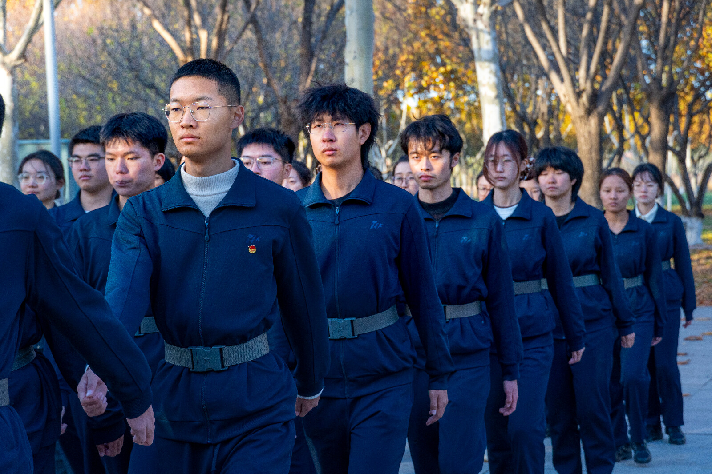
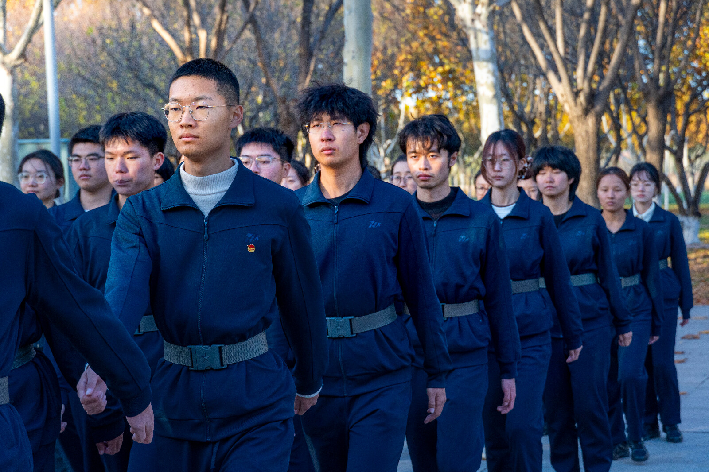
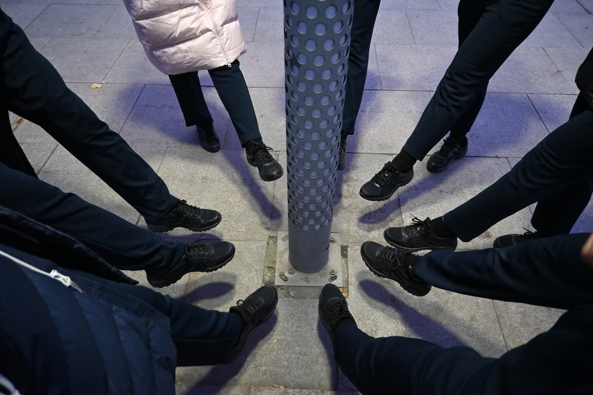
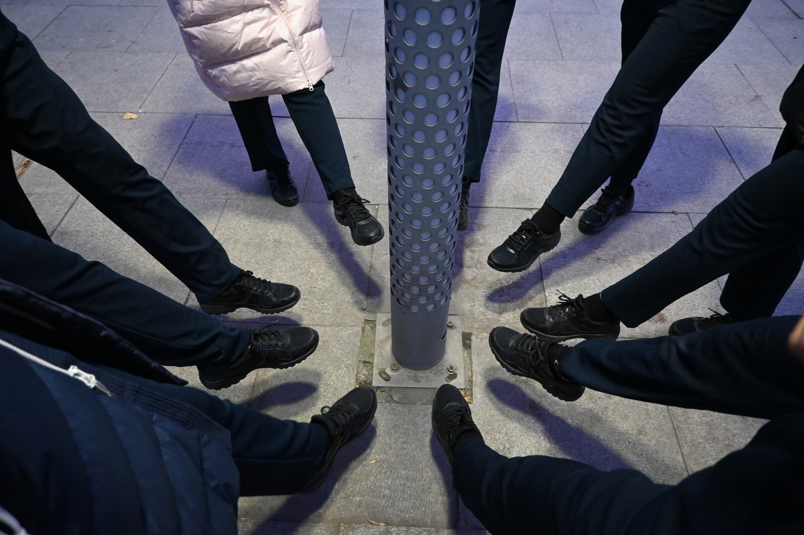

启动与熟悉阶段
训练正式进入常态化。通过连续两天的晚训，队员开始系统学习基础队列动作和规范要求，在反复练习中逐步适应训练节奏。晚间训练帮助队员们克服时间困难，培养纪律性，为后续训练打下基础。
首次集中大训练，对前期学习的动作进行整体检查与统一，队伍开始形成基本的动作框架和协同意识。通过集体合练，队员们相互观察、学习，初步形成整齐划一的动作标准。
重复与打磨阶段
在前期训练基础上，对动作细节进行反复打磨，通过高强度重复训练，逐步减少个体差异，提升整体一致性。教官对每个动作进行精细化指导，队员们逐渐形成肌肉记忆。
通过素质拓展活动，加强队员之间的沟通与协作，增强队伍凝聚力，在训练之外进一步建立信任与默契。活动中队员们展现出的团队精神为后续训练提供了强大的精神支持。
训练进入相对稳定阶段，队伍动作完成度和整体节奏明显提升，成员逐渐形成对训练强度与要求的心理预期。队员们开始从被动接受训练转变为主动追求动作完美。
 

检验与调整阶段
开展第一次阶段性考核，对队员动作规范、整体配合和训练成果进行集中检验，考核结果为后续训练提供了明确的调整方向。通过考核发现的问题，为个性化训练方案的制定提供了依据。
巩固与收官阶段
围绕考核中暴露的问题进行针对性强化训练，进一步提升动作稳定性与执行力。针对薄弱环节进行重点突破，确保每位队员都能达到标准要求。
 


对最终考核内容进行集中演练，强化规范意识，为结训做好充分准备。这是学期训练的最后一次集中训练，队员们全力以赴，展现最佳状态。
完成第二次动作考核，对本学期训练成果进行最终检验，随后举行结训晚会，为本阶段训练画上阶段性句号。晚会中表彰优秀队员，总结训练经验，增强队伍凝聚力。